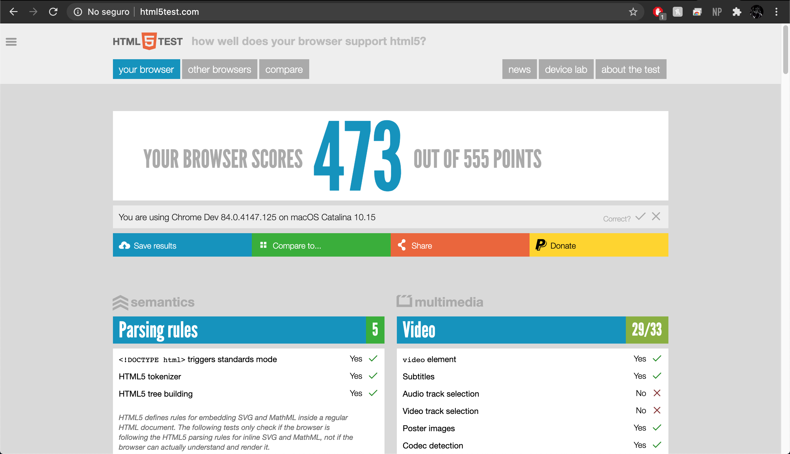

¿Cuál es la diferencia entre Internet y World Wide Web?
De acuerdo con un artículo de la BBC [1], el Internet es una inmensa red de computadoras alrededor del mundo conectadas entre si. Por el otro lado,3 la World Wide Web es una enorme colección de páginas que está dentro de esta red de computadoras (Internet).
¿Cuál es el propósito de los métodos HTTP: GET, HEAD, POST, PUT, PATCH, DELETE?
Los HTTP Verbs o métodos HTTP definen acciones que se realizará sobre un recurso. Para más información de estos puede verse en su sección de descripciones.
¿Qué método HTTP se debe utilizar al enviar un formulario HTML, por ejemplo cuando ingresas tu usuario y contraseña en algún sitio? ¿Por qué?
EL método GET. Esto es debido a que es el método utilizado para recuperar datos de un recurso. Esto se hace utilizando la URL, donde se introducen los datos de la siguiente forma:
En la página www.formulario.com se introdujo el nombre (Juan) y apellido (Perez) del usuario en la página principal del sitio.
¿Qué método HTTP se utiliza cuando a través de un navegador web se accede a una página a través de un URL?
Un servidor web devuelve una respuesta HTTP con código 200. ¿Qué significa esto? ¿Ocurrió algún error?
Este código no es un error, es el código mandado para representar que la solicitud ha sido exitosa.
¿Es responsabilidad del desarrollador corregir un sitio web si un usuario reporta que intentó acceder al sitio y se encontró con un error 404? ¿Por qué?
Si, este error indica que la conexión con el servidor fue exitosa pero el recurso solicitado no existe. Esto quiere decir que el desarrollador ha de tener un problema que resolver en su proyecto.
¿Es responsabilidad del desarrollador corregir un sitio web si un usuario reporta que intentó acceder al sitio y se encontró con un error 500? ¿Por qué?
No, este error indica que el servidor que aloja este sitio web tiene un problema, pero no sabe cuál es en específico.
¿Qué significa que un atributo HTML5 esté depreciado o desaprobado (deprecated)? Menciona algunos elementos de HTML 4 que en HTML5 estén desaprobados.
De acuerdo con la página www.tutorialspoint.com, los atributos depreciados en este caso en específico son aquellos atributos que ya no son permitidos o fueron eliminados de HTML 4 en la creación de HTML5.
¿Cuáles son las diferencias principales entre HTML 4 y HTML5?
De acuerdo a John Freddy Vega en el 2011 [3] algunas de las principales diferencias entre HTML 4 y HTML5 en el son:
HTML5 sigue aun en desarrollo, lo cual indica que es posible que cambie completamente, por el otro lado HTML 4 no tiene este problema.
La adicción de elementos como header, article, section y footer que reflejan mejor la anatomía de los sitios web.
Creación del elemento canvas, que representa gráficos y antes de este los sitios web dependían de Flash
Sintaxis simplificada para la definición del tipo de documento con el elemento DOCTYPE HTML!
Entre otras...
¿Qué componentes de estructura y estilo tiene una tabla?
Tiene filas y columnas. Estos son representados por los elementos td y tr respectivamente
¿Cuáles son los principales controles de una forma HTML5?
form, fieldset, legend, textarea, label, button y input
¿Qué tanto soporte HTML5 tiene el navegador que utilizas? Puedes utilizar la siguiente página para descubrirlo: http://html5test.com/ (Al responder la pregunta recuerda poner el navegador que utilizas)
-El navegador Google Chrome en mi computadora obtuvo 473 de 555 puntos.

Sobre el ciclo de vida y desarrollo de los sistemas de información:
¿Cuál es el ciclo de vida de los sistemas de información?
De acuerdo con el blog Power Data [4] las fases de un sistema de información son:
Planeación: Preparación para el diseño y la implementación. En esta fase se definen el alcance del proyecto, se justifica y se decide la metodología de desarrollo.
Análisis: Se hace un análisis del proyecto de donde se concretan una serie de requisitos, que marcarán las funciones de este proyecto.
Diseño: En esta fase del proyecto, se define cómo se van a llevar a cabo los requisitos
Desarrollo:Marca el inicio de la produccion. En esta fase se espera que el cambio sea constante.
Integración y Periodo de pruebas:Fase crucial para el proyecto. Esta es la fase donde se empiezan a hacer pruebas del producto para asegurar que satisfagan los requisitos del proyecto.
Fase de implementación: Fase donde el producto ya es presentado al usuario/cliente. Se empieza a capacitar al usuario para el uso del proyecto.
Fase de mantenimiento: Fase donde el producto está en uso por los usuarios. En esta fase se corrigen los problemas que puedan surgir y se mejora el rendimiento del producto.
¿Cuál es el ciclo de desarrollo de sistemas de información?
Con base en lo aprendido durante la investigación, el ciclo de desarrollo se ha de desarrollar primero implementando todo lo ya previsto en el diseño y, cuando sea aprobado, empezar a hacer pruebas para comprobr que efectivamente se ha cumplido con el objetivo.
Definiciones clave
URL: Un URL es la direccion específica que se le asigna a cada uno de los recursos disponibles en la red. Esto se hace para que puedan ser identificados y localizados fácilmente.
HTTP
Métodos más frecuentes
GET: Recupera datos de un recurso específico del servidor.
POST: Envia una entidad a un recurso específico del servidor.
PUT: Actualiza por completo un recurso del servidor.
HEAD: Obtiene información sobre un determinado recurso.
PATCH: Actualiza parcialmente un recurso en el servidor.
DELETE: Elimina un registro existente en el servidor.
HTML5
Lenguaje de programación utilizado para la creación de sitios web. El nombre lo recibe al ser la 5ta version de este lenguaje.
JS
JavaScript es un lenguaje orientado a objetos. Es comunmente usado como un lenguaje de scripting para páginas web
PHP
Lenguaje de programación utilizado para sitos web. Este lenguaje se comunica con el servidor y el servidor le envia recursos.
jsp
Lenguaje de programación utilizado para sitos web. Similar a PHP, pero usa el lenguaje de programación Java.
Ajax
Asynchronous JavaScript And XML es una técnica para desarrollar aplicaciones interactivas para sitios web. Esta técnica mantiene una conexión con el servidor en segundo plano para que asi sea posible realizar cambios a el sitio en caso de ser necesario.
Referencias
[1]https://www.bbc.com/mundo/noticias-47538812
[2]https://www.tutorialspoint.com/html5
[3]John Freddy Vega, Guía HTML5. El presente de la web.,47,2011.